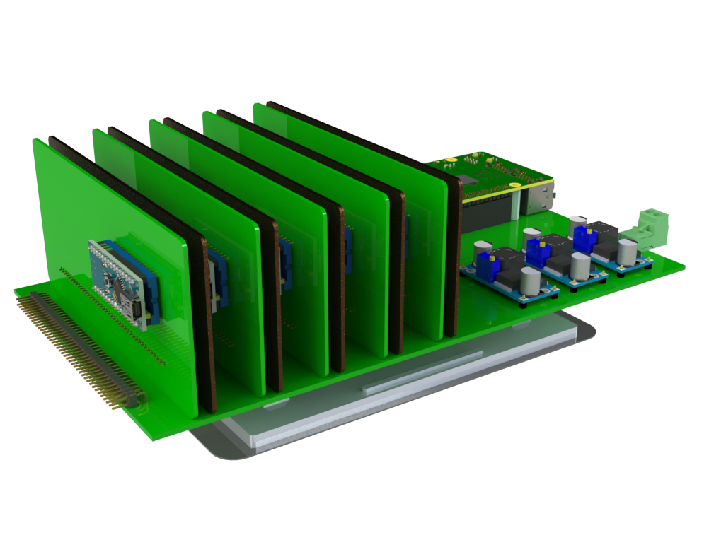

This project template is created to the spec of Spojko 100x100mm board with the 40-pin header for communication, IOs and 34-pin header for power supplys. It also includes the components for powering the Arduino from 5V using the 34-pin connector. You will need to configure else to suit your design.
The board outline looks like the following:

See project files for licensing details. This project is open source.(c)2017 tvlada73